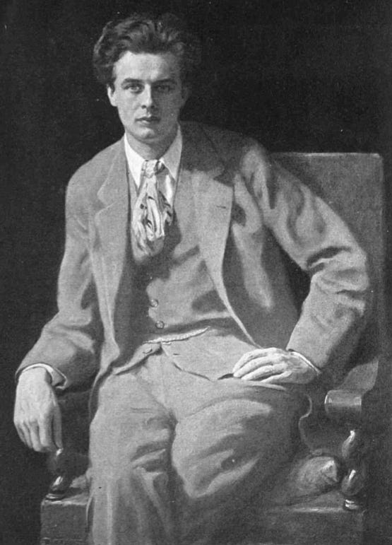
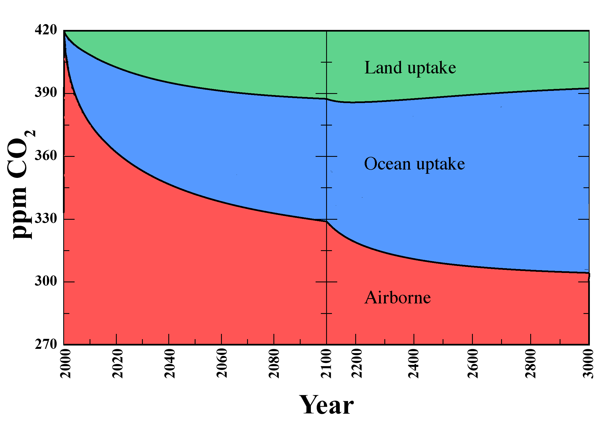
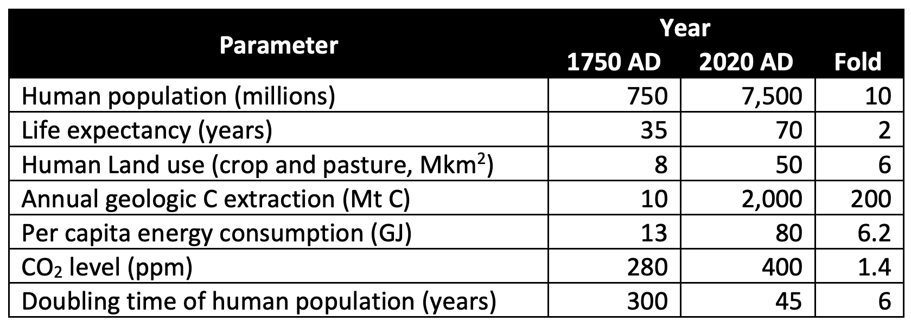

I’m Jonathan Burbaum, and this is Healing Earth with Technology: a weekly, Science-based, subscriber-supported serial. In this serial, I offer a peek behind the headlines of science, focusing (at least in the beginning) on climate change/global warming/decarbonization. I welcome comments, contributions, and discussions, particularly those that follow
Deming’s caveat
, “In God we trust. All others, bring data.” The subliminal objective is to open the scientific process to a broader audience so that readers can discover their own truth, not based on innuendo or
ad hominem
attributions but instead based on hard data and critical thought.
You can read Healing for free, and you can reach me directly by replying to this email.
If someone forwarded you this email, they’re asking you to sign up. You can do that by clicking
here
.
For my regular readers, let me acknowledge a hanging thread and introduce another. In my seventh installment, “
Earth is getting warmer. So what? (Part 2)
” I put a personal stake in the ground to assess my confidence in current climate models. My decision point was based on an establishable fact, specifically, “Can current climate models ‘hindcast’ the most recent historical episode of climate change, which occurred about 10,000 years ago?”. Then, I sidestepped the question in my eighth installment because I realized the dramatic (and literally unprecedented) rise in carbon dioxide over the past 350 years (the most recent 0.04% of the data record from ice cores, which span 800,000 years). My visceral response to that primary data was, “Screw the models! This is a problem that needs to be addressed regardless!” So I didn’t continue my deep dive into models, but I plan to at some point.
Let me also introduce another thread. This one comes from the Facebook troll patrol: There is a lot of sound and fury from climate change critics. While most of it is
ad hominem
(both pro and con) and innuendo that only serves to muddy the waters, there is some actual data that must be considered. Most of the counter-arguments follow the lines of “global warming is part of a natural cycle”. Thus, they seek to exonerate human activity (and my hero, Carbon) from culpability. I want to log this contrarian data to see how it fits (or not) with the data we’ve already considered. That’s how Science progresses, after all.
I have accumulated some contrarian data already, but please send any you’re aware of, either by replying to this e-mail or sending them to
healingearth@substack.com
. I will use them in future newsletters as time allows. And, of course, my mind could change, and in that case, the discussion will take a different direction.
Today’s read: 7 minutes.
An opening quote to stimulate the synapses:

Man is so intelligent that he feels impelled to invent theories to account for what happens in the world. Unfortunately, he is not quite intelligent enough, in most cases, to find correct explanations. So that when he acts on his theories, he behaves very often like a lunatic.
Thus, no animal is clever enough, when there is a drought, to imagine that the rain is being withheld by evil spirits, or as a punishment for its transgressions. Therefore you never see animals going through the absurd and often horrible fooleries of magic and religion. No horse, for example, would kill one of its foals in order to make the wind change its direction. Dogs to not ritually urinate in the hope of persuading heaven to do the same and send down rain. Asses do not bray a liturgy to cloudless skies. Nor do cats attempt, by abstinence from cat’s meat, to wheedle the feline spirits into benevolence. Only man behaves with such gratuitous folly.
It is the price he has to pay for being intelligent, but not, as yet, quite intelligent enough.
[Emphasis mine]
While Huxley was dystopian in his oeuvre, his point of not acting based on theoretical concepts alone is worth considering. Tying together earlier themes, a theory is a model and will follow statistician
George Box’s dictum
: “
All
models are wrong, but some are useful.” So, by extension, all theories are wrong, but some are useful. Both improve over time.
Given the topic of this installment, “decarbonization” refers to “the process of reducing ‘carbon intensity’, lowering the amount of greenhouse gas emissions produced by the burning of [geologic carbon].
1
” So I ask, “Are we intelligent enough yet to rely on decarbonization as a solution to climate change? Or is it a modern rain dance intended to ward off droughts or evil spirits?”
This philosophical question is consistent with the themes of this series, but data cannot answer it. Instead, it is rhetorical, imploring us to follow Science and question the scientists simultaneously. Think (enough) before you act! If there’s something that doesn’t sound quite right, don’t look at the theory. Instead, look to the data, and judge for yourself.
The story continues…
Let’s reiterate what the problem is. Stated concisely:
The increase in carbon dioxide levels in the atmosphere, attributable to human extraction and combustion of geologic carbon over 350 years of industrialization, threatens to destabilize Earth’s climates.
To solve this problem, we must control the Earth’s atmosphere. Specifically, we need to adjust the amount of carbon dioxide it contains if we expect to control the planet’s temperature. Regardless of how you slice it, adjusting Earth’s “thermostat” will require “
geoengineering
”, in other words, an intentional process of applying human ingenuity (backed by Science).
Today’s question is:
Will decarbonization avoid climate change?
For illustrative purposes, I like to consider simple edge cases rather than complicated directional metrics like “reducing ‘carbon intensity’” that require a lot of analytical skill. Instead, let’s ask what would happen if the world went cold turkey and eliminated geologic carbon entirely. We already know that we’re making
no
measurable progress
2
toward this goal. Our efforts, however well-intentioned, are as effective as a rain dance! But, for the sake of argument, let’s see what “models” say would happen to Earth after quitting geologic carbon cold turkey:

Figure adapted from Figure 5 of Strassmann, K. M. and Joos, F.: The Bern Simple Climate Model (BernSCM) v1.0: an extensible and fully documented open-source re-implementation of the Bern reduced-form model for global carbon cycle–climate simulations, Geosci. Model Dev., 11, 1887–1908, https://doi.org/10.5194/gmd-11-1887-2018, 2018. Starting year was set to 2000 for clarity, and the curves were extrapolated from a hypothetical pulse of 100 Gt, relaxing toward the pre-1750 level of 270 ppm
I chose the axes to represent recovery from today’s carbon dioxide levels to those present before industrialization and began the timeline, for illustration, to be the year 2000. This simple, open-source model incorporates the conventional “carbon cycle” components and predicts the time course of long-term sequestration of carbon dioxide into land and ocean. Even if it’s only qualitative, it describes the mess we find ourselves in: In this impractical, ridiculous scenario, even at the turn of the
next
millennium in the year 3000, a significant amount of the carbon we’ve
already
emitted will
still
be in the air! If our goal is to revert to pre-industrial levels of carbon dioxide in the atmosphere (where our climates were stable for 10,000 or so years), then choosing decarbonization as our sole course of action is destined for failure. Even if we stopped geologic carbon extraction completely (in other words, no more using oil, natural gas, and coal for energy), we would still need to wait for thousands of years for the Earth to recover! If we don’t stop completely, then the top edge of this chart will continue to rise, and the recovery time will continue to expand. I’m pretty sure that once we reach a tipping point for climate change (at whatever point that is), this model will likely fail, but it won’t matter by then—we’re already screwed.
This edge scenario would also require some pretty massive sociopolitical changes. But, given the severity of the problem, are the changes needed worth it? After all, we’re saving the world! So what would need to change, and what could stay the same?
Well, just like our climate models, we can “hindcast” (at least qualitatively) to get a picture of what life for humans might be like. A lot has changed since 1750, when Earth last supported a fully sustainable, carbon-neutral population.
3

Comparison of modern human experience to that found in 1750, the IPCC benchmark of the beginning of the Industrial Revolution
This is a lot of data to digest. Still, to a first approximation, to decarbonize completely, the maximum human population that the Earth’s ecosystems could reasonably support would probably be smaller. Moreover, without the energy content of geologic carbon, we’d be hard-pressed to meet our expectations of quality of life. For example, traveling between North America and Europe, a crossing that now takes under 8 hours by air, took two months by sail in 1750. So any “quality of life” that includes international travel would certainly be hard to support!
As always, I welcome other interpretations.
To support their prescriptions, respected academicians, too numerous to cite, have done complicated calculations in a piecemeal approach. These calculations, as a rule, show that building from a base of understanding about our current energy use, humanity can
theoretically
satisfy all of its needs without resorting to geologic carbon. I respectfully disagree with this conclusion. The historical record (which I covered in the
last issue
) shows that none of these “wedges” have been implemented to the point that they’re addressing the problem we need to solve. And this record also shows that it is sociologically impractical to return to a time of carbon neutrality. In other words, “net zero” has to become “gross zero” worldwide, or we’re never going to get there with decarbonization alone. More needs to be done.
There is a fundamental truth that underlies this dilemma. In today’s world, carbon
is
energy. Therefore, by extension, decarbonization is de-energization, consciously (if superstitiously) avoiding certain energy sources with the expectation of averting climate change.
Land use is derived from Goldewijk et al.,
Global Ecol. Biogeogr.
20
(2011) 73–86, and the 2020 value is estimated from data in this paper. Current extraction of geologic carbon is quoted in terms of elemental carbon, not CO2 (which weighs 3.7 x as much). Global Energy Statistical Yearbook 2019, Enerdata. Oil and gas were converted using the calculator found at
energyeducation.ca
. Energy use per capita in 1750 is sourced as the average energy use for humans, animals, wood, wind, and water from 1561-1859, in England & Wales, from
Wrigley E. A. (2013) “Energy and the English Industrial Revolution”,
Phil. Trans. R. Soc. A.
371,
20110568.
Even though coal was in limited use in Britain even as early as 1561, for modeling, I assume that before 1750, the population as a whole was supported solely by renewables, so I have consequently discounted any energy from coal. Per capita energy use in 2020 comes from the U.S. Energy Information Administration, which calculates 77 MMBTU of energy consumption per capita worldwide. Accessed at
eia.gov